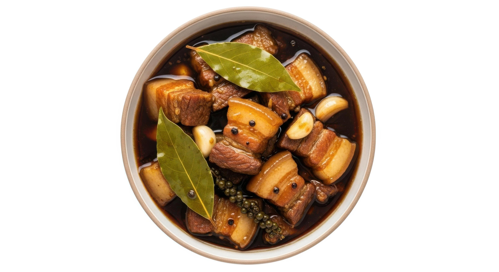

"Pork Adobo is one of the most popular Filipino dishes known for its rich, savory, and slightly tangy flavor. Made with pork simmered in soy sauce, vinegar, garlic, and spices, this comforting dish is best served with hot steamed rice."

Pork Adobo is often considered the national dish of the Philippines because of its popularity and unique flavor. The word “adobo” comes from the Spanish word adobar, which means “to marinate.” However, Filipino adobo existed even before the Spanish colonization. Early Filipinos used vinegar and salt to preserve meat in the hot tropical climate, which later evolved into the adobo we know today. One interesting fact is that there is no single official recipe for adobo. Every Filipino family has their own version — some prefer it sweeter, saltier, spicy, or with more sauce. Traditional pork adobo tastes even better the next day because the meat absorbs more flavor overnight.